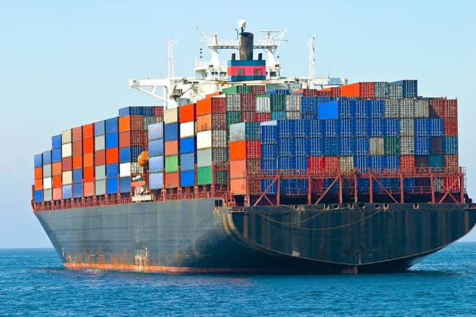
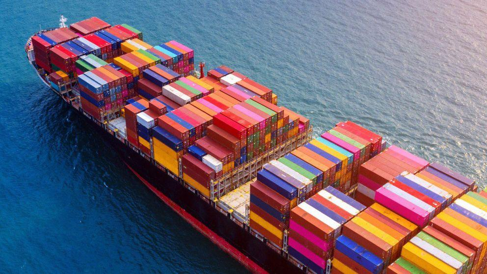
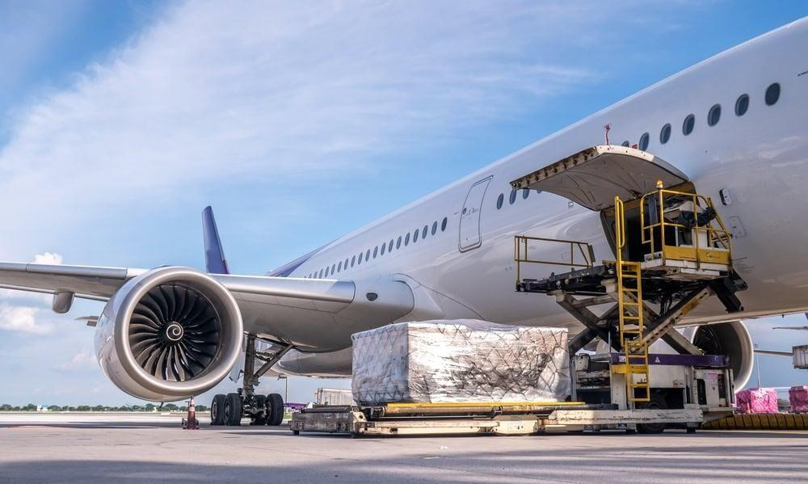
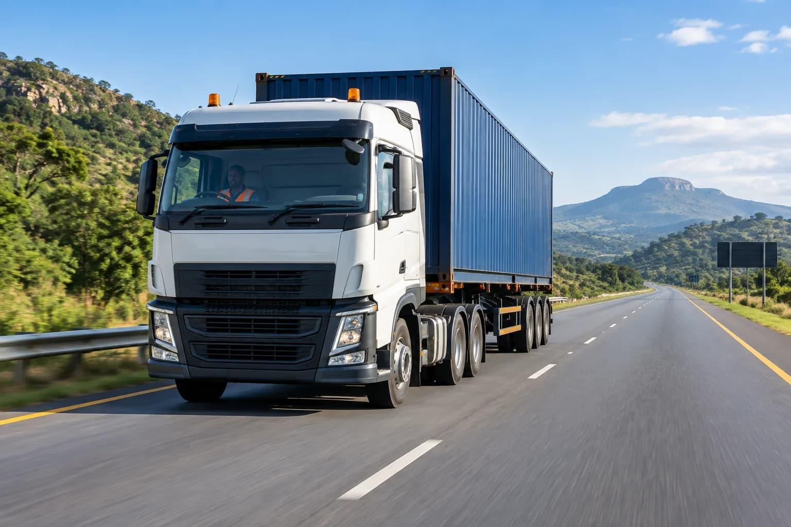

Transportation
Moving a T-shirt across the world

After manufacturing, finished T-shirts are packaged and transported to warehouses, shops and customers. Clothing can travel across countries and continents using ships, aeroplanes and trucks. The distance and transport method affect the environmental impact of this stage.
🚢 Key Facts
- Clothing is often transported in large shipping containers.
- Cargo ships can carry large quantities of clothing over long distances.
- Trucks are commonly used to move goods between factories, ports, warehouses and shops.
- Air freight is faster but generally produces more emissions per unit of cargo than sea freight.
How T-shirts Are Transported
Different transport methods are used depending on distance, cost and delivery time.

By Sea
Cargo ships transport large quantities of clothing between countries. Sea freight is commonly used for international clothing shipments.

By Air
Aeroplanes move clothing quickly over long distances. However, air freight generally creates higher emissions per unit of cargo.

By Land
Trucks transport clothing between factories, ports, warehouses and retail stores, usually over shorter distances.
What Happens Next?
Once the T-shirt reaches a shop or customer, it enters the use stage. It may be worn, washed, dried and cared for over several years.
Continue to Use →